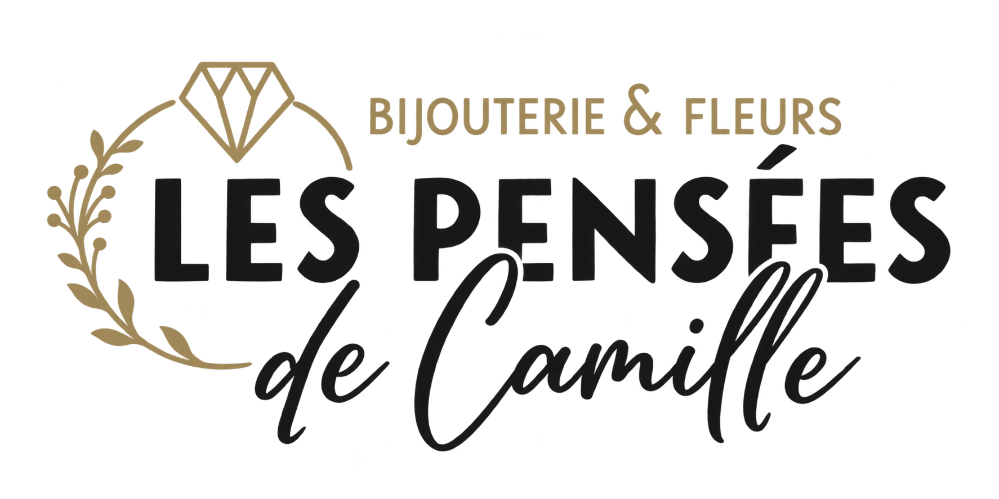
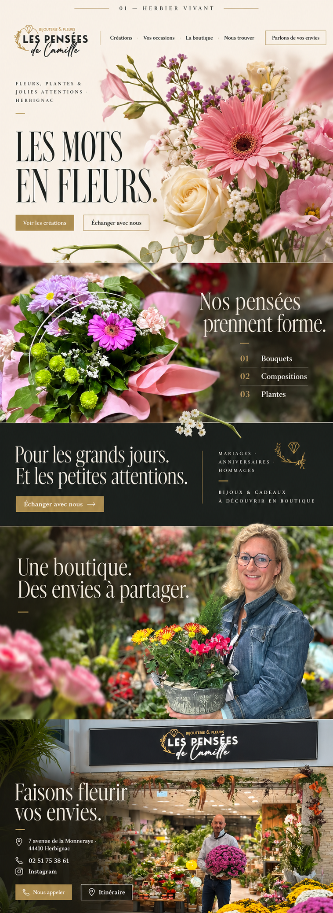

Modelo 1 · Herbier vivant · Selecionado
Les Mots
en Fleurs.
Um percurso editorial em que a presença das flores encontra as palavras. A identidade atual da boutique, fotografias reais e uma composição botânica de campanha formam cinco capítulos distintos.
Explorar a implementação →
01 / Identidade
Preservar o que já floresce.

PNG com fundo transparente. Restauração raster assistida por IA a partir da fachada e do Instagram fornecidos. O arquivo mestre oficial poderá substituí-lo futuramente.
Nos pensées
prennent forme.
Instrument Serif para títulos. Manrope para leitura e interface. Fontes locais e licenças OFL incluídas.
Fleurs · Plantes · Jolies attentions
02 / Cor
A luz e o detalhe.
Ivoire · #F3EFE4
Encre · #1B1D1B
Or mat · #B7A075
Or lisible · #7A6235
Feuille · #53614B
O dourado claro acompanha a identidade e recebe texto escuro nos botões. O dourado mais profundo é usado nos pequenos detalhes sobre marfim.
03 / Percurso
Cinco capítulos. Um gesto.
| Cena | Imagem e desenho | Movimento |
|---|---|---|
| Les mots en fleurs. | Flores de campanha transparentes, espaço marfim e palavras estreitas. | Assentamento do plano, respiração mínima e haste. |
| Nos pensées prennent forme. | Bouquet real com índice editorial de criações. | Revelação do texto, haste cruzando a borda. |
| Pour les grands jours. | Único intervalo de cor plana, filete e diamante. | Entrada simples, sem cortina que trave a leitura. |
| Une boutique. | Pessoa e vaso da fotografia original, sem alterar o rosto. | Texto em um plano estável. |
| Faisons fleurir vos envies. | Entrada real, contatos e rodapé integrado à fotografia. | Convite final; scroll nativo. |
Escala aprovada, preservada.
Base central de 1024 px. No desktop, título 92 px e arranjo 650 px, inclusive em 1440 e 1920 px. Mobile reorganizado. Hero com dimensão explícita e proporção natural, sem ampliar a prancha ou preencher uma tela por cover.
QA visual em navegador: não verificado. O relay de prévia do ambiente estava indisponível. Relatórios distinguem cálculo, checagem estática e revisão visual de assets.
04 / Referência aprovada
A composição escolhida.
Prancha conceitual gerada e aprovada. Não é uma captura do HTML. As fotos reais na implementação preservam os arquivos originais; a referência abaixo foi composta por IA.

05 / Entrega